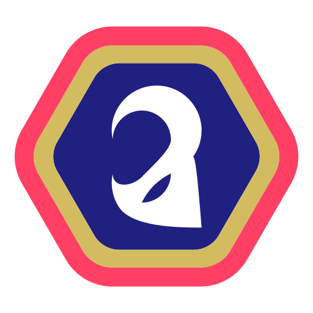

⚠️
Haz clic en un texto para editarlo · arrastra secciones, experiencias, tareas, chips o cursos para moverlos · tamaños y espacios en Diseño de página.

Editor de CV · edita, arrastra y ajusta JM-CV Editor · crea tu CV gratisHaz clic en un texto para editarlo · arrastra secciones, experiencias, tareas, chips o cursos para moverlos · tamaños y espacios en Diseño de página.